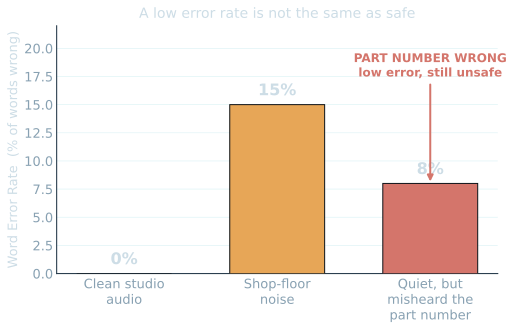

Speech II · It learns a pattern from the past
At 9am I promised you the moment it breaks.
It's 4pm. This is that moment — and then we measure how much you moved since this morning.
◷ The 4pm question — where does this AI break? — closes today
Predictive AI · Session 04 of 04
04
Speech IIhow well does it hear us?
A pilot reports a snag
transcribe to text
suggest the likely part
◷ Last dot on the rail · the day closes here
Cards or out loud · you answer first
Three from after lunch — what stuck?
Before it could classify a sound, what did we turn the sound into?
- The failing-bearing tell on that spectrogram — what was it?
- The detector that learned only "normal" — what did it catch?
Room answers first
The whole session in three steps
A pilot reports a snag. The computer writes it down, then names the likely part.
Speak
a pilot's spoken snag
→
Transcribe
speech-to-text (ASR)
→
Suggest part
Antenna · Cable · HPF · LRU
Our snag — "static on the radio, drops when it shakes" — its top suggestion is the Cable (CBL-221). Speech analytics = speech-to-text + this morning's text analytics.
Run it live · speech becomes text
It turns the recording into text — almost word-for-word.
We spoke
"Static on the radio, signal drops when it shakes"
gTTS fabricates the clip from a written line — no microphone, everyone gets the same recording.
It heard
Near-identical transcript
Whisper "tiny" listens to the audio and writes the words. On a clear voice it is near-perfect — speech became text.
Once it is text, nothing about the machine changes — it is the same words-to-numbers move as this morning.
One new word · the whole vocabulary this session
Count the words it got wrong. That fraction is the error rate.
Word Error Rate
Wrong words ÷ words said
Swapped, dropped, or invented words over the words actually spoken. 0% is perfect · 15% is roughly one word in seven wrong.
The trap ahead
Low looks like good
A small error rate reads like good news. Keep one eye on whether low always means safe — that's today's last lesson.
Speak
transcribe
score the misses · WER
Lock a guess on your cards first
Same sentence, three conditions — which scores worst?
Same sentence, three conditions
The worst number is harmless — the dangerous one is small.
15% in noise is just fumbled filler — the part number survives. 8% that swaps one digit of the part number sends the wrong component to the floor.
- The common words — replace · the · on — it nails every time.
- The part number CBL-221 — rare, alphanumeric — is the first thing to break.
- Rare and important are the same words. Low WER, wrong part.

Clean 0% · shop-floor noise 15% (harmless) · misheard part number 8% (dangerous)
When the one word must be right
Don't transcribe everything — listen for a few fixed commands.
A small fixed vocabulary — "start log", "flag defect", "pressure low", "engine fire" — is far more robust to noise and accents than open-ended dictation.
- Spotted even buried in filler — "uh start log please" → start log.
- A line with no command — "replace the oil filter next service" → correctly ignored.
- Domain training goes further: ATC speech recognition hit >95% for controllers, ~97% on callsigns.
The payoff · speech became a shortlist
Text in, a likely part out — a ranked shortlist, with a reason.
Learn
32 past snags · 8 per part
→
Match the meaning
embeddings — like Session 2
→
- "static on the radio, drops when it shakes" → top suggestion Cable (CBL-221), antenna & filter close behind.
- A ranked shortlist with confidence — a prioritised starting point, not a verdict.
The most hands-on minute of the day
Change the snag — watch the part change.
Speak a different snag and rerun: "the antenna is cracked, reception poor in the rain" → Antenna. Mix two parts' clues — "interference AND reception dropping" — and the shortlist splits.
- Edit the sentence in identify_part( … ), rerun — speak → transcribe → suggest, all in one.
- A split confidence isn't a failure — it's the computer telling you it's genuinely unsure. Honest behaviour.
Try your own — call out a snag
You rebuild it · out loud · node by node
All four sessions were the same three steps.
First node — what does it always start from?
- The middle — what does it find?
- The last — what does it produce?
Past examples
the pattern
predict the next case
Room says each node first
The money shot · your own change, measured
The honest peak isn't the AI. It's how far you moved.
Same poll, 9am and now. Almost nobody slid to "it can do anything" — the middle moved off "hype" toward "I've seen what it can and can't do." Earned, not sold.
Breathe · before we close the loop
You didn't lose the skepticism. You sharpened it.
You know where it works and where it breaks. That's a more useful belief than the one you walked in with.
The 4pm answer · the loop closes here
Where it breaks — named, every one.
A word or part name it never heard in training — no pattern, so it guesses.
- Noise, accents, jargon — the shop floor and the radio smear the audio. (Why keyword spotting and domain training exist.)
- Low error, wrong word — ~8% WER that still swapped CBL-221. The number looked safe; the part wasn't.
- Not bugs — the shape of the method. It only knows what the past showed it. Knowing that is your job.
The one line that carried the whole day
It learns a pattern from the past —
nothing more, nothing magic.
All the past examples
the recurring pattern
a prediction you can question
Speech I → II → done · the rail is full
You can now ask the one question that matters.
Where does it break? — and you can answer it yourselves. That's the day.
Text I
Text II
Speech I
Speech II — complete
◷ Loop closed · pattern from the past · thank you